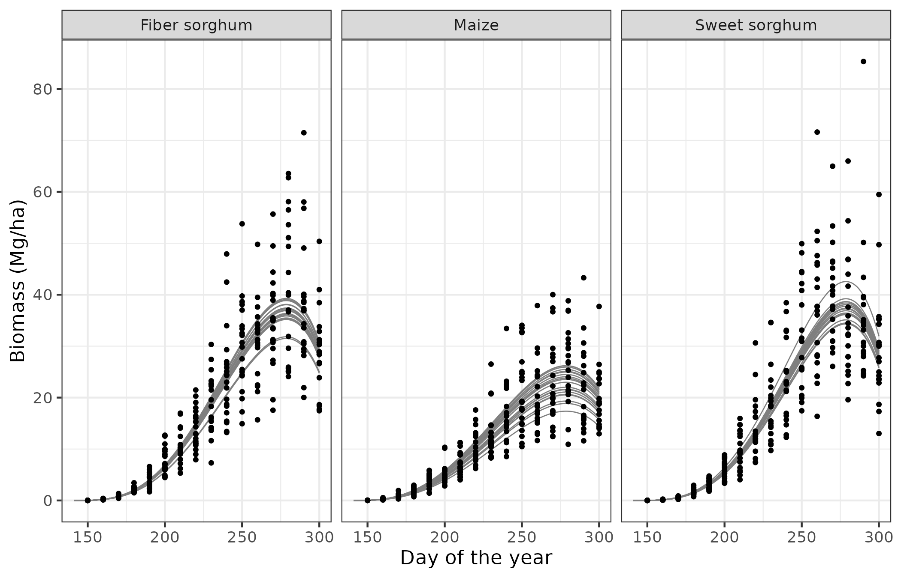

Autocorrelation and simulation
2026-11-21
Source:vignettes/autocorrelation-simulation.Rmd
autocorrelation-simulation.RmdThis vignette covers the autocorrelation of the residuals of a plot over time, and simulation studies: simulating data from a fitted model, refitting it, and comparing the estimates with the true parameters, including the autocorrelation parameter.
The sorghum and maize data
The data set SorghumMaize contains the above-ground
biomass (Mg/ha) of fiber sorghum, sweet sorghum and maize at two input
levels of water and nitrogen, in four blocks, sampled on 11 days of the
year from sowing, day 141, to day 303 (Danalatos et al., 2009; Miguez,
2025). Each combination of crop, input level and block is a plot,
sampled repeatedly over the season. The growth of a crop over a season
is determinate: it stops at maturity, after which the biomass may
decline as leaves are lost. The beta growth function of Yin et
al. (2003), model = "beta", describes this, from the start
of growth
,
here fixed at sowing, to the maximum
at the end of growth
,
with the time of the fastest growth
,
and back towards zero after
,
reaching it at
(see the vignette Growth models and their parameters;
model = "beta_capped" stays at the maximum instead).
The biomass varies little between the plots while it is small, and
more as it grows. A gaussian model has a constant residual variance, as
large at sowing as at maturity, and data simulated from it are often
negative early in the season. The lognormal family,
family = "lognormal", has a constant coefficient of
variation instead:
is normal with mean
and standard deviation
,
so that the curve
is the median of the biomass, and the residuals are relative deviations
from it. It needs positive responses, so the zero biomass at sowing is
left out; the beta curve is zero at sowing,
,
anyway. The asymptote and the time of the fastest growth depend on the
crop and the input level, and each plot has a random asymptote:
library(gcTMB)
library(ggplot2)
SorghumMaize$plot <- interaction(SorghumMaize$Crop, SorghumMaize$Input, SorghumMaize$Block, drop = TRUE)
sm <- subset(SorghumMaize, Biomass > 0)
fitre <- gcTMB(Biomass ~ DOY, fform = b1 + b2 ~ Crop * Input, rform = b1 ~ 1 | plot, data = sm,
model = "beta", start = c(b4 = 141), family = "lognormal")
ggplot(SorghumMaize, aes(x = DOY, y = Biomass, group = plot, colour = Input)) +
geom_line() +
geom_point() +
facet_wrap(~ Crop) +
labs(x = "Day of the year", y = "Biomass (Mg/ha)", colour = "Input") +
theme_minimal()
Autocorrelation of the residuals
A plot that is above its curve at one sampling may stay above it at
the next. The correlation argument models this
autocorrelation of the residuals within a group over time, with the same
correlation structures as the package nlme (Pinheiro and Bates, 2000;
Zuur et al., 2009, Chapter 6). The residuals
of a group are normal with the residual variance
and
with
the correlation of residuals one unit of time apart.
corAR1() is the autoregressive process of order 1 at
integer times (or at the positions of the observations, with
form = ~ 1 | group), with
;
corCAR1() its continuous-time version, for unequally spaced
times, with
.
Residuals of different groups are independent, and the correlation is
available for the gaussian and lognormal (on the log scale) families. As
the process is Markov, each residual given the previous one of its
group,
earlier, is normal with mean
and variance
,
so the likelihood is exact and its cost linear in the number of
observations; with random effects, the Laplace approximation integrates
them out as before.
The parameter
is estimated on an unconstrained scale, as in nlme. For
corCAR1(), with
,
this is the logit link,
.
For corAR1(), with
,
it is
,
the logit of
,
which maps the interval
to the real line (twice Fisher’s
-transformation,
).
coef() reports the parameter on this scale, as
cor_par:CAR1 or cor_par:AR1, and
corpars(), summary() and
confint() report
itself.
The plots are sampled about every 15 days, at unequal intervals, so
corCAR1(form = ~ DOY | plot) is the structure to use, with
the correlation per day. Its starting value is
by default, as in nlme, which is a correlation of
,
practically zero, between consecutive samplings; there the likelihood
hardly changes with
,
and the optimiser stays near the starting value. A starting value close
to 1, value = 0.9, starts from a correlation of
between samplings. For the lognormal family, the correlation is that of
the residuals of
,
the relative deviations from the curve:
fitrec <- gcTMB(Biomass ~ DOY, fform = b1 + b2 ~ Crop * Input, rform = b1 ~ 1 | plot, data = sm,
model = "beta", start = c(b4 = 141), family = "lognormal",
correlation = corCAR1(value = 0.9, form = ~ DOY | plot))
summary(fitrec)
#> Call:
#> gcTMB(form = Biomass ~ DOY, fform = b1 + b2 ~ Crop * Input, rform = b1 ~
#> 1 | plot, data = sm, start = c(b4 = 141), family = "lognormal",
#> model = "beta", correlation = corCAR1(value = 0.9, form = ~DOY |
#> plot))
#>
#> Model: beta
#> Family: lognormal, identity link for all parameters
#>
#> Number of observations: 212, groups: plot 24
#> Log-likelihood: -466.3 (df = 16), AIC: 964.5, BIC: 1018
#>
#> Coefficients:
#> Estimate Std. Error
#> b1:(Intercept) 32.6795 2.353
#> b1:CropMaize -13.0754 2.947
#> b1:CropSweet sorghum -0.1908 3.341
#> b1:InputHigh 7.1624 3.694
#> b1:CropMaize:InputHigh 1.2994 4.793
#> b1:CropSweet sorghum:InputHigh 2.2539 5.329
#> b2:(Intercept) 237.4210 1.439
#> b2:CropMaize -5.3300 2.361
#> b2:CropSweet sorghum 2.3127 1.798
#> b2:InputHigh -0.6375 1.835
#> b2:CropMaize:InputHigh 0.5966 3.205
#> b2:CropSweet sorghum:InputHigh 0.5322 2.444
#> b3:(Intercept) 278.3070 1.079
#> Fixed: b4:(Intercept) = 141
#>
#> Random effects:
#> Groups Name Std.Dev.
#> plot b1 0.0002202
#> Standard deviations close to zero (singular fit): plot b1
#>
#> Residual standard deviation of log(y): 0.2904
#>
#> Correlation structure: continuous-time AR(1) in DOY within plot
#> rho: 0.04809
#>
#> Optimiser: relative convergence (4), maximum absolute gradient 2.2e-05
corpars(fitrec)^15
#> rho
#> 1.702408e-20
anova(fitre, fitrec)
#> Likelihood ratio tests of gcTMB models
#>
#> npar AIC BIC logLik deviance LR Df Pr(>LR)
#> fitre 15 962.53 1012.9 -466.27 932.53
#> fitrec 16 964.53 1018.2 -466.27 932.53 2.8821e-08 1 0.9999The estimate of moves far down from its starting value, to a correlation of practically zero between consecutive samplings, and the likelihood ratio test finds no autocorrelation: the relative deviations of a plot from its curve are independent over the season. The random asymptotes of the plots are not needed either, as their standard deviation is close to zero once the crops and the input levels have their own curves. With the gaussian family, both appear to be needed; this is not a feature of the plots, but of the constant residual variance, which misfits the small deviations early in the season and the large ones late. Below, simulations with a true autocorrelation show that the model finds it when it is there.
confint() gives the profile likelihood interval of
,
or with method = "wald" a Wald interval computed on the
logit scale and transformed back. Here it spans the whole range from 0
to 1: without autocorrelation in the data, the likelihood is flat in
,
and the data say nothing about its value.
confint(fitrec, parm = "cor_par:CAR1", method = "wald")
#> 2.5 % 97.5 %
#> rho 0 1Simulation
A simulation study has four steps: fit a model to data, simulate new data sets from the fitted model, refit the model to the simulated data, and compare the estimates with the true parameters, the estimates of the original fit.
The true model
We fit the lognormal beta growth function to the biomass, with an asymptote and a time of the fastest growth for each crop, and a random asymptote of each plot. The start of growth is fixed at sowing, ; the beta curve has no asymmetry .
fitsim <- gcTMB(Biomass ~ DOY, fform = b1 + b2 ~ Crop, rform = b1 ~ 1 | plot, data = sm,
model = "beta", start = c(b4 = 141), family = "lognormal")
fitsim
#> Call:
#> gcTMB(form = Biomass ~ DOY, fform = b1 + b2 ~ Crop, rform = b1 ~
#> 1 | plot, data = sm, start = c(b4 = 141), family = "lognormal",
#> model = "beta")
#>
#> Model: beta
#> Family: lognormal, identity link for all parameters
#>
#> Coefficients:
#> b1:(Intercept) b1:CropMaize b1:CropSweet sorghum
#> 36.2386 -12.5753 0.6892
#> b2:(Intercept) b2:CropMaize b2:CropSweet sorghum
#> 236.9786 -5.0948 2.5446
#> b3:(Intercept)
#> 278.2859
#> Fixed: b4:(Intercept) = 141
#>
#> Random effects:
#> Groups Name Std.Dev.
#> plot b1 3.582
#>
#> Residual standard deviation of log(y): 0.3006
converged(fitsim)
#> [1] TRUEThe fitted model is the true model of the simulation. Its parameters are:
fixef(fitsim)
#> b1:(Intercept) b1:CropMaize b1:CropSweet sorghum
#> 36.238579 -12.575316 0.689162
#> b2:(Intercept) b2:CropMaize b2:CropSweet sorghum
#> 236.978644 -5.094775 2.544621
#> b3:(Intercept) b4:(Intercept)
#> 278.285857 141.000000
VarCorr(fitsim)
#> $plot
#> b1
#> b1 12.82913
#> attr(,"stddev")
#> b1
#> 3.581777
#> attr(,"correlation")
#> b1
#> b1 1
#>
#> attr(,"sc")
#> [1] 0.300555
sigma(fitsim)
#> [1] 0.300555Other true models can be made from it with update(),
e.g. update(fitsim, fixef = c("b1:(Intercept)" = 30)) for a
larger asymptote of fiber sorghum,
update(fitsim, VarCorr = ...) for another variance of the
random effects, or update(fit, rho = ...) for another
autocorrelation, as below.
Simulating new plots
We simulate 20 new plots of each crop, each sampled every 10 days
from day 150 to day 300. Each plot in newdata is a new
curve, with its own random effect drawn from the fitted variance.
simdata <- expand.grid(DOY = seq(150, 300, by = 10), plot = paste("plot", 1:60, sep = ""))
simdata$Crop <- rep(levels(SorghumMaize$Crop), each = 20)[as.integer(simdata$plot)]
simdata$Biomass <- simulate(fitsim, nsim = 1, seed = 1, newdata = simdata)[[1]]
head(simdata)
#> DOY plot Crop Biomass
#> 1 150 plot1 Fiber sorghum 0.03351686
#> 2 160 plot1 Fiber sorghum 0.18146325
#> 3 170 plot1 Fiber sorghum 0.86335105
#> 4 180 plot1 Fiber sorghum 1.76762973
#> 5 190 plot1 Fiber sorghum 2.77908468
#> 6 200 plot1 Fiber sorghum 6.29144684Refitting the model
The same model is fitted to the simulated data.
simfit <- gcTMB(Biomass ~ DOY, fform = b1 + b2 ~ Crop, rform = b1 ~ 1 | plot, data = simdata,
model = "beta", start = c(b4 = 141), family = "lognormal")
converged(simfit)
#> [1] TRUEconverged() checks that the log-likelihood is finite,
that the optimiser reports convergence with a largest absolute gradient
below
,
and that the Hessian is positive definite. With few groups and several
correlated random effects, the likelihood is often so flat in some
directions that nlminb reports “singular convergence” or
“false convergence”, or stops with a gradient slightly above
,
although it is at the maximum. With
control = list(restart = TRUE), such a fit is optimised
once more from its estimates. The fit keeps the better optimum, and
fit$restart$improvement holds the improvement of the
log-likelihood. converged() accepts a fit that the restart
improved by less than lltol
(
by default), since its maximum is stable. In a simulation study that
does not need standard errors, sdreport = FALSE also saves
about a quarter of the time of each fit, but then the Hessian is not
checked. Here, with three plots of each crop, the fit converges at once,
so that the restart is not needed and f1$restart is
NULL:
small <- subset(simdata, plot %in% paste0("plot", c(1:3, 21:23, 41:43)))
f0 <- gcTMB(Biomass ~ DOY, fform = b1 + b2 ~ Crop, rform = b1 ~ 1 | plot, data = small,
model = "beta", start = c(b4 = 141), family = "lognormal", control = list(sdreport = FALSE))
converged(f0)
#> [1] TRUE
f1 <- gcTMB(Biomass ~ DOY, fform = b1 + b2 ~ Crop, rform = b1 ~ 1 | plot, data = small,
model = "beta", start = c(b4 = 141), family = "lognormal", control = list(sdreport = FALSE, restart = TRUE))
f1$restart$improvement
#> NULL
converged(f1)
#> [1] TRUEThe 95% parametric bootstrap confidence intervals of the coefficients
and the variance parameters are compared with the true values, the
estimates of the original fit. confint reports the standard
deviation of the random effects and the residual standard deviation on
their natural scale, while coef has them on the log scale,
so the true values and the estimates are transformed in the same
way.
ci <- confint(simfit, method = "boot", nsim = 50, seed = 1)
#> Computing bootstrap confidence intervals (50 simulations) ...
natural <- function(p){
lg <- grepl("^log_", names(p))
p[lg] <- exp(p[lg])
p
}
truth <- natural(coef(fitsim))
tab <- data.frame(true = truth, estimate = natural(coef(simfit)), ci,
covered = truth >= ci[, 1] & truth <= ci[, 2],
check.names = FALSE)
# the standard deviations are on their natural scale: drop "log_" from their names
rownames(tab) <- sub("^log_", "", rownames(tab))
tab
#> true estimate 2.5 % 97.5 % covered
#> b1:(Intercept) 36.238579 36.6773045 34.4540358 39.383038 TRUE
#> b1:CropMaize -12.575316 -13.7901623 -17.3929057 -10.632215 TRUE
#> b1:CropSweet sorghum 0.689162 0.6887544 -1.6154944 3.621184 TRUE
#> b2:(Intercept) 236.978644 236.8807942 235.7555052 238.389181 TRUE
#> b2:CropMaize -5.094775 -5.0449933 -5.8784815 -4.022029 TRUE
#> b2:CropSweet sorghum 2.544621 2.8495607 2.0070857 3.596094 TRUE
#> b3:(Intercept) 278.285857 278.6153925 277.1445230 280.234416 TRUE
#> sd:b1|plot 3.581777 2.8538480 1.7905491 3.450739 FALSE
#> sigma 0.300555 0.3154057 0.3011981 0.331147 FALSEThe simulated biomass and the estimated curves of the 60 plots:
grid <- expand.grid(DOY = seq(141, 300, length.out = 200), plot = unique(simdata$plot))
grid$Crop <- rep(levels(SorghumMaize$Crop), each = 20)[as.integer(grid$plot)]
grid$Biomass <- predict(simfit, newdata = grid)
ggplot(simdata, aes(DOY, Biomass, group = plot)) +
geom_line(data = grid, colour = "grey50", linewidth = 0.3) +
geom_point(size = 0.8) +
facet_wrap(~ Crop) +
labs(x = "Day of the year", y = "Biomass (Mg/ha)") +
theme_bw()
The simulated biomass is positive, and varies with the size of the plants, as the observed biomass does: the lognormal residual standard deviation, 0.3 on the log scale, is a coefficient of variation of about 30%. A simulation study reproduces the fitted model, not the process that generated the data, so its conclusions only carry over to the real data as far as the model describes them; with the gaussian family, about a tenth of the simulated biomass values would be negative.
In a full simulation study, these steps are repeated for many
simulated data sets, e.g. to estimate the coverage of the confidence
intervals or to compare growth models with criteria(), as
below for the autocorrelation.
Recovering the autocorrelation
With a correlation structure, simulate() draws the
residuals of each group with the autocorrelation of the fit: within a
plot in newdata, ordered in time, each residual given the
previous one,
earlier, is normal with mean
times the previous residual and variance
.
update() is designed for simulation studies like this one:
it sets some of the parameters of a fitted model to chosen values and
keeps the others, without refitting, so that the result can serve as the
true model of the simulation. Its arguments are fixef for
the coefficients, VarCorr for the covariance matrices of
the random effects, sigma for the residual standard
deviation, and rho for the autocorrelation.
Here the true model is the lognormal fit fitrec from
above, with crop and input effects, random asymptotes of the plots and
continuous-time AR(1) residuals of
.
Its autocorrelation,
per day, is set to
with update(), a correlation of
between samplings 10 days apart, and all other parameters keep their
estimates:
rho0 <- 0.8
fitcar <- update(fitrec, rho = rho0)update() changes
and nothing else, so the other parameters are those estimated together
with
.
Alternatively, a new fit with
fixed at 0.8, corCAR1(value = 0.8, fixed = TRUE), estimates
the other parameters given
.
This is the way to go when the true model should fit the data as well as
possible with the chosen
,
and it has the higher log-likelihood; update() is the way
to go when only
should differ from the fitted model, e.g. to compare simulations with
different autocorrelations and otherwise the same parameters.
fitfix <- gcTMB(Biomass ~ DOY, fform = b1 + b2 ~ Crop * Input, rform = b1 ~ 1 | plot, data = sm,
model = "beta", start = c(b4 = 141), family = "lognormal",
correlation = corCAR1(value = rho0, form = ~ DOY | plot, fixed = TRUE))
pars <- function(f) c(fixef(f)[c("b1:(Intercept)", "b2:(Intercept)", "b3:(Intercept)")],
sigma = sigma(f), corpars(f), logLik = as.numeric(logLik(f)))
rbind(estimated = pars(fitrec), updated = pars(fitcar), refitted = pars(fitfix))
#> b1:(Intercept) b2:(Intercept) b3:(Intercept) sigma rho
#> estimated 32.67953 237.4210 278.3070 0.2904355 0.04809179
#> updated 32.67953 237.4210 278.3070 0.2904355 0.80000000
#> refitted 32.60736 237.4475 278.3419 0.2938295 0.80000000
#> logLik
#> estimated -466.2650
#> updated -468.4116
#> refitted -468.3100We simulate from the updated model: 50 data sets of 10 new plots of
each combination of crop and input level, each sampled every 10 days
from day 150 to day 300. We fit the model to each data set, now with
estimated. confint() computes the Wald interval of
on the logit scale and transforms it back.
design <- expand.grid(DOY = seq(150, 300, by = 10), rep = 1:10, Crop = levels(SorghumMaize$Crop),
Input = levels(SorghumMaize$Input))
design$plot <- interaction(design$rep, design$Crop, design$Input, drop = TRUE)
sims <- simulate(fitcar, nsim = 50, seed = 1, newdata = design)
carsim <- do.call(rbind, lapply(sims, function(y){
dat <- cbind(design, Biomass = y)
f1 <- gcTMB(Biomass ~ DOY, fform = b1 + b2 ~ Crop * Input, rform = b1 ~ 1 | plot, data = dat,
model = "beta", start = c(b4 = 141), family = "lognormal",
correlation = corCAR1(value = 0.9, form = ~ DOY | plot))
ci <- confint(f1, parm = "cor_par:CAR1", method = "wald")
data.frame(rho = corpars(f1)[["rho"]], lower = ci[1], upper = ci[2],
covered = ci[1] <= rho0 & rho0 <= ci[2])
}))The means of the estimates of and of the bounds of their 95% Wald intervals, and the coverage of the intervals, against the true value 0.8:
colMeans(carsim[, c("rho", "lower", "upper", "covered")])
#> rho lower upper covered
#> 0.7869091 0.7205922 0.8409081 0.9800000
ggplot(carsim, aes(x = rho)) +
geom_histogram(bins = 10, fill = "grey70", colour = "grey30") +
geom_vline(xintercept = rho0, colour = "red") +
labs(x = expression(paste("Estimate of ", rho)), y = "Simulations") +
theme_minimal()
References
Danalatos, N.G., Archontoulis, S.V. and Tsiboukas, K. (2009). Comparative analysis of sorghum versus corn growing under optimum and under water/nitrogen limited conditions in central Greece. In: Proceedings of the 17th European Biomass Conference, Hamburg, 538–544.
Miguez, F. (2025). nlraa: Nonlinear Regression for Agricultural Applications. R package, https://CRAN.R-project.org/package=nlraa.
Pinheiro, J.C. and Bates, D.M. (2000). Mixed-Effects Models in S and S-PLUS. Springer, New York.
Zuur, A.F., Ieno, E.N., Walker, N.J., Saveliev, A.A. and Smith, G.M. (2009). Mixed Effects Models and Extensions in Ecology with R. Springer, New York.
Yin, X., Goudriaan, J., Lantinga, E.A., Vos, J. and Spiertz, H.J. (2003). A flexible sigmoid function of determinate growth. Annals of Botany 91, 361–371.